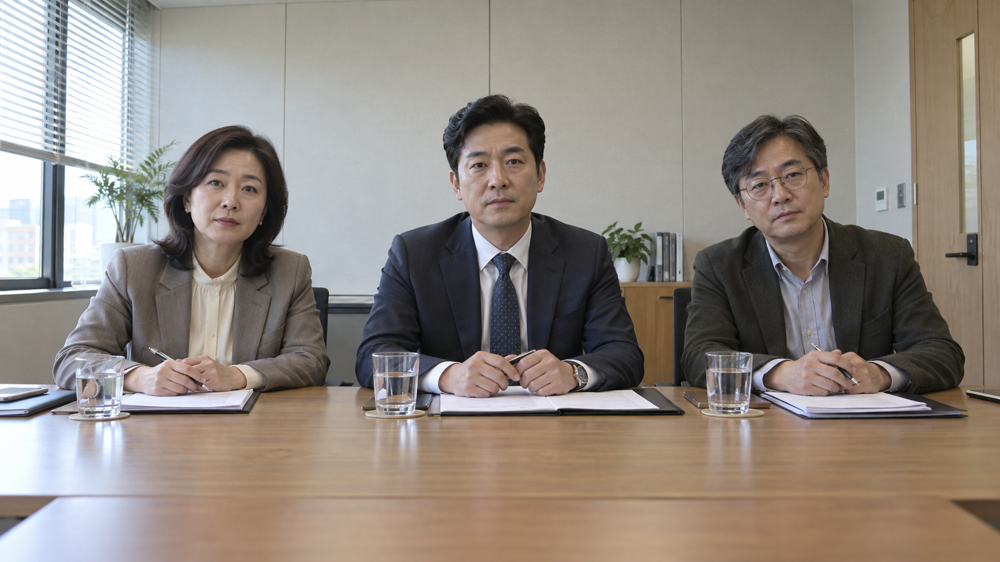
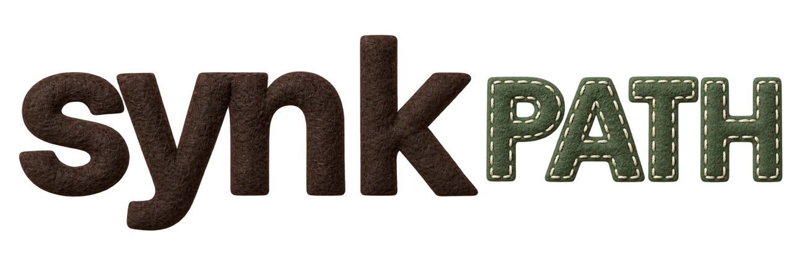
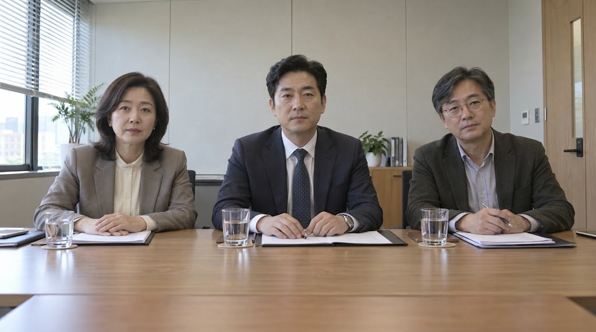

기존 기준 이미지
SEEDANCE 2.5영상 원본 확인 중
원본 저장기존 기준 이미지 보기


FIRST INTERVIEW / IMAGE STUDYSeedance 기준 이미지 비교SAME MODEL. A NEW STARTING IMAGE.
기준 이미지를 달리한 Seedance 2.5 영상 비교입니다.
기존 이미지와 Gemini 자동 모드 시안에서 시작한 장면을 번갈아 보세요.
영상 원본 확인 중
원본 저장
새 영상 원본 확인 중 · 파일이 준비되면 재생할 수 있습니다.
원본 저장
SAME VIDEO SETTINGS
두 샘플의 요청 조건입니다. 실제 해상도와 길이는 각 영상 아래에 원본 정보로 표시됩니다.
자동으로 재생하지 않습니다. 한쪽을 재생하면 다른 영상은 멈춥니다. 기준 이미지는 아래에 별도로 표시하며, 이미지 자체는 영상이 아닙니다.
LOOK AT THE CHANGE
세 사람의 간격과 얼굴 크기, 책상 위 손·펜의 위치가 어떻게 달라졌는지 살펴보세요. 질문할 때의 입 모양과 질문 뒤 경청 동작도 기준 이미지와 함께 확인할 수 있습니다.
이전 “나노바나나” 표기를 정정합니다. Gemini 자동 모드 결과이며 정확한 이미지 모델은 확인되지 않았습니다. Nano Banana Pro 사용을 검증한 비교가 아닙니다. 확보한 이미지도 1024×572 미리보기입니다.
처음과 끝의 얼굴 유지 · 한국어 발음과 입 모양 · 질문을 마친 뒤의 표정 · 옆 면접관의 경청 · 손과 펜의 일관성
일반 단안 영상 비교입니다. 전체 면접의 질문 분기, 경청 루프 연결, 입체 VR과 Quest 착용감은 이 샘플만으로 확인되지 않습니다.